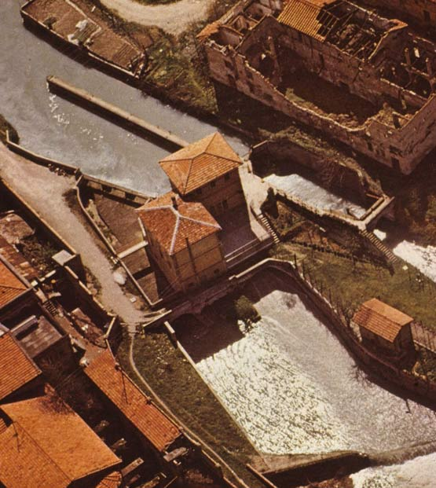
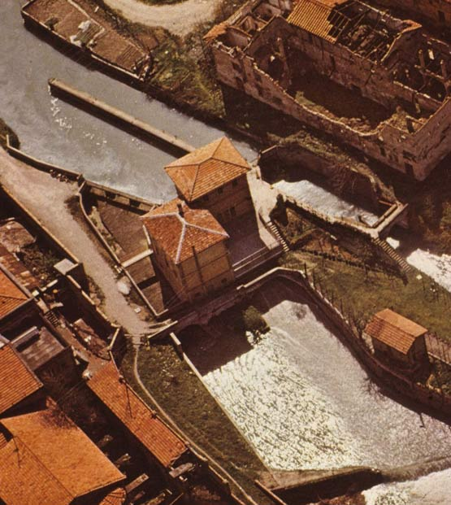

Bologna, 23 Ottobre 2023 Bologna, 23 marzo - Scioccante scoperta sulla fossa dei Giardini Margherita: una fossa comune nascondeva un sinistro segreto. Gli investigatori hanno smascherato una setta composta da necrofili e appassionati di storia antica, responsabile di omicidi rituali, arrestando i capi, tra cui l'ex membro dei "Bambini di Satana", Giuseppe Longanesi, e un docente di storia dell'Università di Bologna, Giuseppe Bianchi, insieme a 12 complici. Questa setta, attiva da alcuni mesi, si ispirava alle antiche pratiche dei Lupercalia, inventando riti che coinvolgevano resti umani come oggetti sacri, con l'intenzione di evocare forze oscure. Per procurarsi i cadaveri, avevano rubato corpi da vari musei, tra cui il Museo Civico Archeologico di Bologna, il Museo delle Mummie di Ferentillo e il Museo Egizio di Torino, per poi seppellirli nei Giardini Margherita in una fossa comune. Questi corpi spaziavano dall'epoca romana alla seconda guerra mondiale e comprendevano anche vittime recenti, uccise brutalmente dai membri della setta in rituali. Inoltre, la setta aveva compiuto agghiaccianti aggressioni in stile "lupercalia" nelle notti del 14 e 15 febbraio e del 14 e 15 marzo, durante le quali avevano maltrattato donne nel centro storico di Bologna, indossando pelli e maschere animali. Queste prove erano necessarie per entrare a far parte della setta, che contava circa quindici adepti. Per le loro riunioni, la setta utilizzava stanze situate nei canali sotterranei dei Giardini Margherita, che attraversavano la città e furono costruite con la partecipazione di Antonio Tusa, un imprenditore edile affiliato alla setta. La fossa comune è stata scoperta il 16 marzo grazie alla segnalazione di un operaio che aveva notato un arto sporgere dal terreno durante i lavori di ampliamento dei giardini. La polizia ha avviato un'indagine che ha portato alla rivelazione di questa inquietante verità. Il procuratore di Bologna, Francesco D'Amico, ha dichiarato che i responsabili saranno perseguiti con le accuse di omicidio plurimo aggravato, associazione a delinquere, vilipendio di cadaveri e furto di beni culturali.
 
